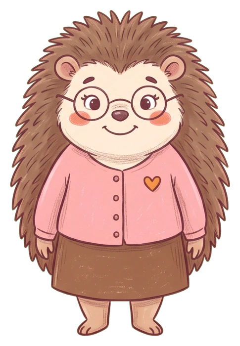
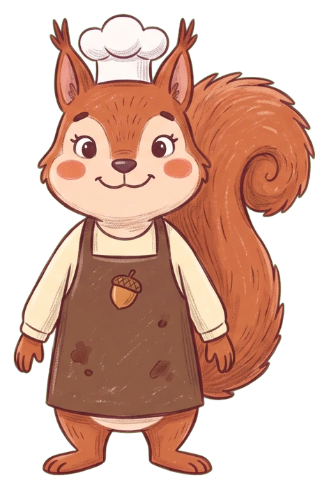

발렌타인 사건 목소리 고르기
Higgsfield MiniMax 프리셋, 한 사람에 세 후보. 다른 사건 인물이 쓰는 여자 목소리(Petra·Evie·Vera·Nora·Nadine·Gracie·Delia·Maeve·Mabel·Giselle·Daisy·Pixie·Juno)는 뺐어요. 탐정은 모든 사건과 같은 Grady예요.

페니 선생님
고슴도치 선생님 · 의뢰인 · 따뜻한 어른 목소리
"Oh, Detective! I'm so glad you're here. I ordered chocolates for my students. But something is wrong with the box."
Helena
Celine
Faye
점잖은 목소리 후보 추가(사용자 요청)
Imogen
Elena

수지
다람쥐 · 초콜릿 가게 주인 · 밝고 친절한 목소리
"Hello, Detective! Happy Valentine's Day! I made a lot of pink heart chocolates this morning!"
Hana
Kayla
Skye선택
마음에 드는 목소리가 없으면 다른 후보를 더 만들 수 있어요(한 줄에 약 0.2크레딧). 고른 뒤 이 페이지와 샘플 폴더는 지울지 여쭤볼게요.